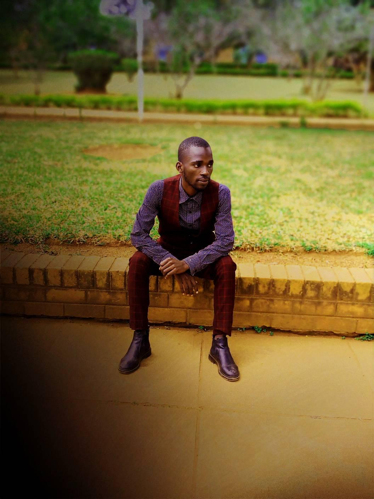

Chervester Nyasulu | WDD 130
Chervester Nyasulu is my name, I am 27 years old, and I am from Malawi. I have a primary school teaching certificate and I'm pursuing a degree in computer software programming through the BYU Pathway Connect program. I am a hardworking, self-motivated individual with excellent communication abilities. I'm interested in software. Computers and technology, which is why I've decided to take a web and computer programming course.